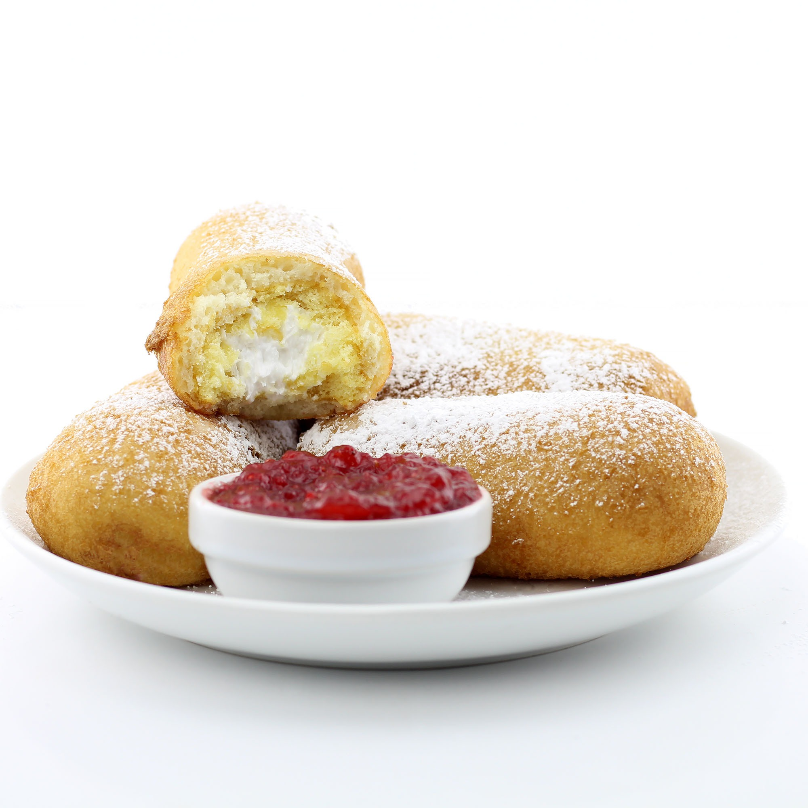

1.FRIED OREOS
FINAL RESULT

TOTAL TIME: 30 MINUTES
SERVINGS: 30
INGREDIENTS
- 2 quarts vegetable oil for frying
- 1 cup milk
- 1 large egg
- 2 teaspoons vegetable oil
- 1 cup pancake mix
-
1 (18 ounce) package cream-filled chocolate sandwich cookies
(such as Oreo)
INSTRUCTIONS
-
Gather all ingredients. Heat oil in a deep fryer or large
saucepan to 375 degrees F (190 degrees C).
-
Whisk milk, egg, and 2 teaspoons of vegetable oil
in a large bowl until smooth.
- Stir in the pancake mix until no dry lumps remain.
-
Dip cookies into batter, one at a time, and carefully
place into hot oil.
-
Fry in batches, 4 or 5 at a time, until cookies
are golden brown, about 2 minutes.
-
Drain on a paper towel-lined plate before serving. Enjoy!
2.FRIED HOT CHEETO PICKLES
FINAL RESULT

TOTAL TIME: 20 MINUTES
SERVINGS: 6
INGREDIENTS
- 1 cup oil for frying, or as needed
- 1 large large egg, beaten
-
½ (8.5 ounce) bag spicy cheese-flavored cornmeal snack
(such as Cheetos® Flamin' Hot®)
- ¼ teaspoon cayenne pepper
- 12 slices dill pickles, such as Vlasic Dill Stackers
INSTRUCTIONS
-
Heat oil in a deep-fryer or large saucepan to
350 degrees F (175 degrees C).
- Place beaten egg in a flat dish
-
Place Cheetos® and cayenne in a food processor. Pulse until
crumbs are achieved. Pour into a separate bowl.
-
Dip a pickle slice in the egg and coat with Cheetos®
crumb mixture. Transfer to a plate. Repeat with remaining
pickle slices.
-
Fry pickle slices in the hot oil, working in batches,
for 3 minutes. Transfer to a paper towel-lined plate
and let sit for 2 minutes for final crisping.
3.FRIED TWINKIES
FINAL RESULT

TOTAL TIME: 15 minutes
SERVINGS: 8
INGREDIENTS
- Twinkies
- Pancake mix
- Milk
- Egg
- Vegetable oil
- Powdered sugar
- Strawberry jam or your preferred dipping sauce
INSTRUCTIONS
-
Freeze Twinkies for at least 2 hours prior to
frying.
-
Heat oil in deep fryer or heavy skillet to 375°F.
-
In a bowl, combine pancake mix, milk, egg and
vegetable oil and stir to combine.
-
One by one, insert sticks into frozen Twinkies,
dip them in the batter and transfer them to the oil.
- Fry in batches for 2 minutes or until golden brown.
-
Drain fried Twinkies on paper towels, top with
powdered sugar and serve with strawberry jam or your preferred
dipping sauce.